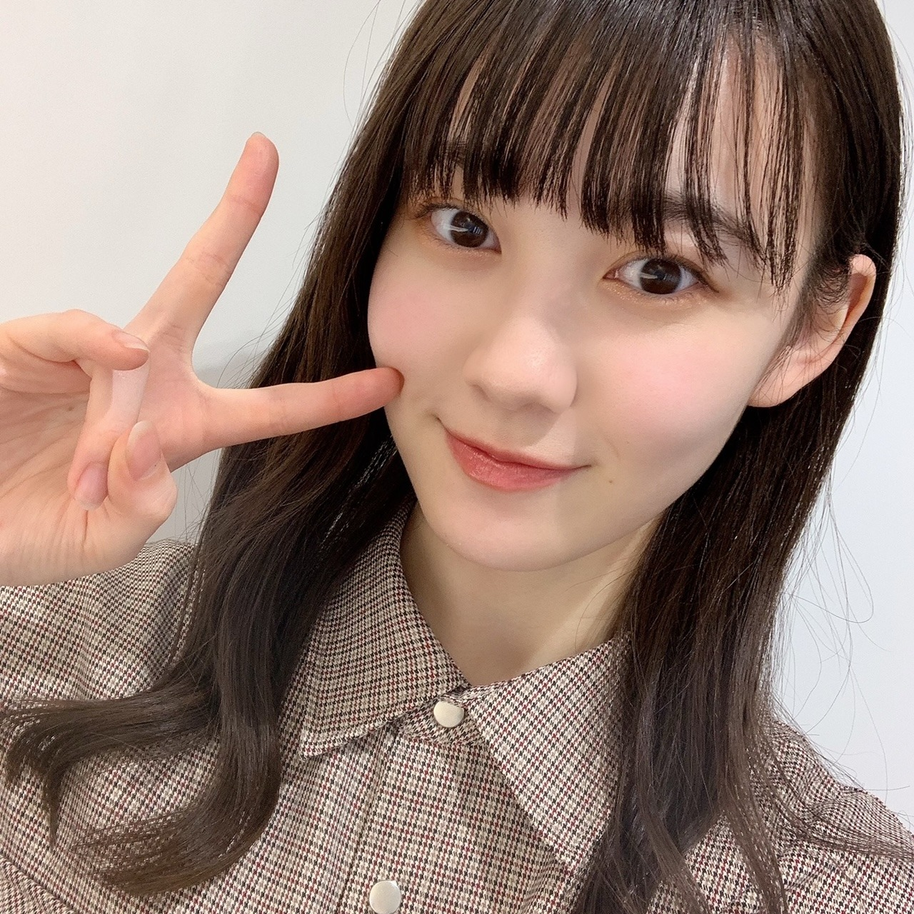
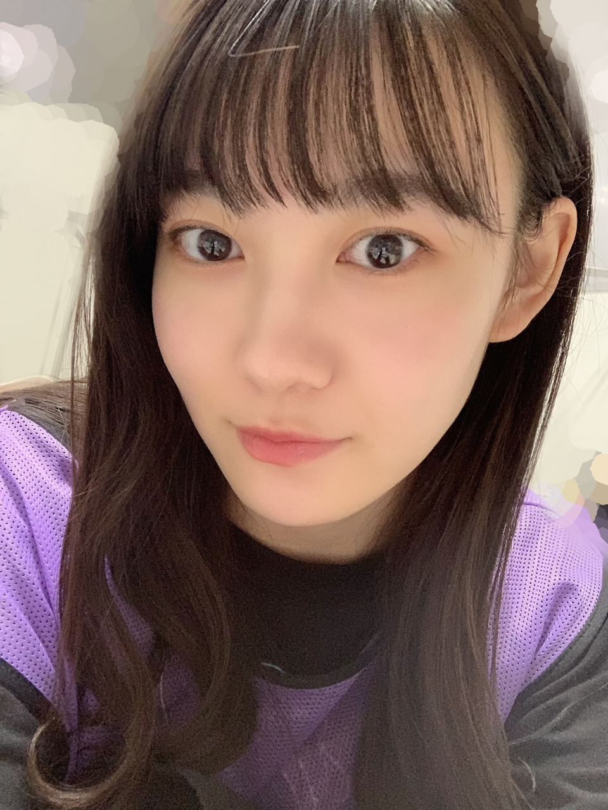

2020/1206Sun4！！ 松尾美佑
高校2年生
16歳
松尾美佑です¨̮
今日はなんの日ですか？
そうです！
今日は4期生ライブの日です！！！
わーーーい！！
ついに来ちゃいましたよ今日が！！
楽しみな気持ちと緊張と！
もう心臓から目が飛び出ちゃいそうな勢いです！

さて！
話は一旦過去に戻りまして
のぎおび4期生ウィーク、楽しんでもらえましたでしょうか！
まゆみゆは、なんとのぎおび選手権でビリになっちゃったので罰ゲーム #のぎばつ をしました
( ᵕ ᵕ̩̩ )
一昨日のかっきー、せーらちゃん、まゆちゃんの のぎおびに罰ゲームのみ参加させて貰いました(、._. )、
プロポリス
本っ当に美味しくなかった！！
です
でも喉には良いらしいので
皆さんも是非(^^)
尼崎姉妹さんな2人をあんな至近距離で拝めて嬉しかったです
物凄い小さな誰も気づかない情報を置いておきます。
髪の毛を3cm切りました
( ˙ỏ˙ ) ほへーですね
そして！
1月の生誕記念グッズが発表されました〜
うさこあらと共に空にパワーを送りました〜
良かったらチェックしてみて下さいˊᵕˋ
そして！その2
レコメン！乃木坂四期生メガ盛り祭り
という事で12月7日から2週間に渡って4期生がレコメン！に登場させて頂きます！
ちなみに私は
12月9日に
大好きな柚菜ちゃんとレイちゃんと3人で登場します！
是非聴いて頂けたら嬉しいです！
明日は〜
なお〜〜〜〜〜〜〜〜〜
今日のアドベントカレンダーのチョコはホワイトチョコだった！
さぁ！
もう！もう、今日ですよ！？
いよいよですね(*¨*)
気が早すぎるのですが、
数時間後には始まって、そして終わっちゃう事に既に凄く寂しさを感じたりしちゃっていて、
一緒に楽しんで絶対に忘れられない時間にしましょう！
それでは！
またあとで会いましょね〜( Ꙭ )/''
ミュウでした¨̮

あとでねっっっっっ( Ꙭ )/''( Ꙭ )/''( Ꙭ )/''
コメント(227)
そんなライブを盛り上げる前哨戦ともいうべき『のぎおび』。まゆみゆの記録を下回る猛者は現れそうもないと思いましたが罰ゲームお疲れ様。保険ポリスならぬプロポリスは許さないでしたね。喉に良いという事でライブ前に丁度良かったのでは。
3cmカットのほへー情報ありがとう。実にお似合いです。
生誕グッズはうさこあらさんと多くのアニマル姿で誕生日を祝福出来るデザイン振りですね♪
『レコメン！』はライブの興奮冷めやらぬ放送になりそうで楽しみ。
いよいよ迎えた『4期生ライブ』。全16色で迎える真のスタートに光あれ。
のぎおびもとっても良かったし、レコメンも楽しみにしてるよ、ミュウちゃん
現在自宅のスクリーンに大きく4番目の光たちのライブ意気込みフリップが各々繰り返し映し出され中〜
あー、もう後数分で待ちに待ったライブ開演でドキドキワクワクや〜
今日のライブ絶対素晴らしいものになると予言できます！
家からではあるけどめっちゃ応援するよ！頑張ってね！
間に合ったー
4期生ライブめっちゃ楽しみ
画面の向こう側からパワー送るね
頑張ってね
ではまたね
バイバイ
影ナレお疲れ様。
あと一分で始まる！
楽しみましょう！！！
(^^)
ライブ、いよいよ本番ですね。
沢山楽しんで下さい。
o(^-^)o
ライブ楽しめましたかね！まだ終わってないので、のぎおびの罰ゲームの時の話しますね！まゆたんと聖来ちゃんはとても面白いですよね！プロポリスが喉に良いって前日ののぎおびで聞いた時にこれビフォーアフターでコントができるなって思っていたら、普通の会話で尼崎姉妹をやるとは、さすがです、まさに理想形ですよね、お腹がこじれるようでした！4期生みんなが楽しく会話してる場所に一緒に居たいですね。
それじゃ頑張って下さいね。あっ写真も可愛いですし、レコメンとかも楽しみにしてます。
おやすみ
チャァオ〜〜〜!☆彡
ミュウちゃん❕❤️❤️❤️❤️❤️笑顔・・・
また、また可愛いくなりましたねぇ〜〜〜⤴️⤴️⤴️❤️❤️❤️❤️❤️笑顔
今日は、いっぱい楽しんできてねぇ〜〜〜⤴️⤴️⤴️❤️❤️❤️❤️❤️笑顔
(＠＾▽゜＠）ゞ❤️❤️❤️
❇️❇️おすまし！⚜️❇️⭐彡
みんな最後まで楽しく頑張ってください
Go Miyuuuuuuuuuuuuuuuuuuuuuuuuuuuuuu>3
4期生ライブ楽しみにしてますよ！ プロポリス頑張りましたね笑 髪の毛切ったんですね お似合いです
年明けのミーグリ取ったので4期生ライブの感想お話できたらなと思います！
プロポリス飲んだ後の顔超好き。笑
4期生ライブ頑張って！
今日はライブだね。時間的に始まっているけど、応援しているよ！！
ー質問ー
・ついついやってしまう癖ってある？
・皆にすすめたいもの、ことってある？
・写真集を発売するならどこで撮影したい？
ありがとう！次回も楽しみにしているよ。
更新だ〜(｣^o^)｣
ﾜｧ───ヽ(*ﾟ∀ﾟ*)ﾉ───ｲ
今みてる最中でミュウミュウちゃんのユニット待ち〜(^-^)
4期生ライブ思てたよりちょ良いね〜!!
ミュウミュウちゃんもだけどネ!!
僕はテスト真っ只中なので1日中勉強してました！
見れないんですけど4期生Liveがんばってください！
質問です！
・僕今中3でゴルフやってるんですけど美佑さんはゴルフ
やったことありますかー？？
誰かに似てると思ったら
こじはる❗元AKB48の小嶋陽菜だわ～
こりゃ美人になるわぁ
涙あり笑いあり
新曲は80'sPOPのダンスナンバーで
若さ溢れるエエ曲じゃん
4期生ライブ見れないけど応援してるからがんばってね！
ライブ、お疲れ様ー！
そして4期ライブお疲れ様☺︎
今日私は英検があったから4期ライブ見れなかったけど
同じ時間にみゆりん達が頑張ってるんだ〜って思ったら頑張れたよ〜
昨日はGTECで今日は英検明日は外国の方とのお話会
英語づくしの日々だけど来週修学旅行だから頑張ってるの
みゆりんは何をご褒美に頑張ってるとかあるのかな？笑
ミーグリについてのお話〜
めちゃくちゃ参加したい思いでいっぱいだったんだけど
ことごとく予定が詰まってて出来そうにないんだ...
めちゃくちゃショックで仕方ないけれど
いつか本当にみゆりんに会える日を楽しみに今回は我慢する
✂︎- - - - - - - -キリトリ- - - - - - - - - - -✂︎
髪の毛3cm切りましたっていう文に対して
本当に【( ˙ỏ˙ ) ほへー】って顔してたっていう誰も知らない情報笑
生誕グッズのトートバッグ買ったよ〜
届くの楽しみにしているね☺︎
✂︎- - - - - - - -キリトリ- - - - - - - - - - -✂︎
いっぱいいっぱい素敵な写真をありがとう
【質問】
✽4期生ライブの裏話教えて欲しいな☺︎
今日も素敵なブログをありがとう
また5日後楽しみにしてるね(⑉• •⑉)❤︎
感動したよー！
大事な日にリレーが回ってくるとは、ミュウちゃん持ってますな。笑
4期生ライブ最高でした！
4期生ライブお疲れ様〜！！すごく楽しかったです！！久しぶりにめっちゃ声出しました笑笑ユニットもほんまにめっちゃ可愛かった！！！後ろに映ってるサンタ姿のみゆちゃんもすごく可愛いかったですー！！
ほんとにお疲れ様〜！
またブログまってるねーー！
今アフター配信見ながらコメント書いてます
ライブお疲れ様！
とても楽しかった〜
ものすごく心が満たされました
ミュウちゃんばっちり見つけたよ〜
終わるのが寂しかったなぁ
ユニットはスリフォやったんだね！
もちろんミュウちゃんを選ばさせてください
セトリ曲数も曲目もほんとよすぎた……
16人で4番目の光見れてほんとに良かった……
新曲も良すぎて良すぎて
ミュウちゃんパジャマ似合ってるしかわいいな〜
それじゃまた5日後に！
素敵であたたかいライブを本当にありがとう
またね！
のぎおびのまゆみゆう可愛かったなあ
そして罰ゲームだけでSHOWROOMに登場して、なんか可哀想だったなあ(;_;)（笑）
でも一応登場できたよね＼(^o^)／ポジティブポジティブ
レコメンの方も凄く楽しみ＼(^o^)／
ハイテンションのミュウの声はきっとラジオ越しでより可愛く聞こえるよ(*´ω｀*)♡
これからも頑張って(/･ω･)/
今真っ最中のはずだが、ライブ頑張って(/･ω･)/
おでこ出しミュウかわいいなあ(｡>﹏<｡)♡♡♡
3cmって、自分でも気づかなくない？（笑）
ライブ最高だったよ
アフター配信も最高だった
新曲も最高だったよ
4期生ライブお疲れ様でしたm(_ _)m
凄く良いライブで4期生の仲の良さが凄く出てて観てて笑顔になれたよ(*´▽｀)
4期生16人になって初めての楽曲「Out of the bleu」も皆良い笑顔で癒された(*´ω｀*)
これから4期生16人の新たなスタートって感じがしたよ(^-^)
これからも応援していくねm(_ _)m
絶賛余韻に浸っております
君の名は希望から始まって、もうそこでテンション爆上がりしました
インフルエンサーかっこいいし、走れ!bicycle可愛いし、ポピパッパパー綺麗だし、もうずーっと色んな美佑ちゃんが見られて幸せでした
MCコーナーでレイちゃんのお団子断った話ニヤニヤしました
Threefold choiceの足音のときの反応とかサンタさんコスプレも超可愛いかったです
その後は4期生楽曲に入ってアンコール後は新曲のOut of the blue初披露だったね
4期生16人の初めての曲が見れてとっても嬉しかったです ノリノリでした
締めの乃木坂の詩は乃木坂の伝統を引き継いでいる感じがして最高だなって思いました
みんな元気で最高な2時間でした！
みゆスマイルたくさん見れて元気貰えました
今日はたくさん食べて、しっかり休んでね
元気に17歳の誕生日迎えられることを願ってます( ˶˙o˙˶ )
ミュウちゃんかわいい!
楽しかったです
ライブお疲れさま！！！！
どうだった？次回のblogが楽しみ～
俺はリアルタイムで見られなかったんだけど、みゆちゃんのダンスの評判がめっちゃ良くて嬉しいです。早く見たい！
また今週もみゆちゃんのラジオが聴けるのでHAPPYです(^-^)
本当に最高だったなーーー いまテンションが上がりながらコメントしてるよ～
とにかく、すべてにおいて可愛くてかっこいいところもあって瞬きするのを忘れてたよ
美佑ちゃんがガルルで裏センターやってて最後のキメポーズのところ抜かれてて最高だったよ！
やっぱりトキトキメキメキでのバク転待ってました！まさかやるとは思わなかったけど、綺麗に決まってたよ
threehold choice最高でした 三人ともスタイル良いねー みんなのソロで歌うところ、一人一人の声が聞けて良かったなー あと、後ろでくろみんトナカイとミュウサンタとレイツリーの戦い可愛い面白かったよ 笑
のこりのコメントは次のブログで書くね！
ライブ楽しかった～ーーーーーーー
ライブの感想はしっかりまとめて、次のブログにコメントします！！
ほんまに最高のライブやった。
自分の気持ちまとめるからちょっと待ってて笑
次のブログに絶対コメントするから見てね。
ではでは体調には気をつけて。
ゆっくり休んでね。
いつもありがとう。
パフォーマンスかっこよかったしかわいかったし
みゆちゃんの新しい一面が見れたかもしれへんな
4期生ライブ見れてよかったわ ほんまにありがとう！
4期生ライブ感動しました‼
ユニット曲もとても素敵でしたし、
4期生パワー凄く素晴らしいです✨
のぎおびウィークも楽しめました！
まゆみゆコンビフレッシュでした☆
尼崎姉妹さん迫力ありましたよねー！
罰ゲームも見られて面白かったです♪
うさこあらパワーも貰えて嬉しいし、
前髪2種類見られて元気出ましたよ✌
レコメン！メガ盛り祭りもワッショイ☺
4期生ライブ見たよー(^^)めちゃくちゃ最高に楽しかったよ！
みゅうちゃんのアクロバットがカッコ良すぎて最高でした。
今度は生で観てみたいなぁ(^^)
みゆちゃんかわいすぎた！！
これからも応援してる！！
ライブ観たよ。
アクロバットだったねー。
どこかで出るって思ったもん。
16人みんな個性出てて楽しかったよー。
素敵な素敵な時間だったから、終わってしまったのが本当に寂しい気持ちだけど、みゆたんのかわいいキラキラ笑顔をたくさん見ることができたので、私は幸せいっぱい
みゆたんを知り、好きになり、今回ライブを観て、改めて好きだなぁって思ったよ〜
練習期間もたくさんたくさんあった訳ではないと思うのに、ダンスが本当によかった！やっぱり踊るということを経験してると違うよね〜！私も小学生の頃から新体操とチアダンスをやってたから、踊ることに関しては割と得意なんだぁ！
みゆたんは可愛い曲が似合う！笑顔で踊っている姿が本当に惹かれるものがあったよ
1人1人にフォーカスできる期生ライブだからこそ、新しいみゆたんの魅力を見つけられた気がする！
素敵な幸せな時間をありがとうね！
ミーグリ！！！みゆたん行くよーー！！！！！
そこでもライブの話できたらいいなぁ。
たくさんお話ししたいな！！
待っててね
またコメントするよー！
本当に良かったすごく良かった…！！！！こうやって乃木坂は繋がっていくんだなって感じられたライブでした。1つ1つのダンスがすごく綺麗で、特にインフルエンサーと夜明けまで強がらなくてもいいでのダンスがかっこよかった…。軸がぶれないで踊れてるからなのかな…すごく綺麗で、手足の長さが存分に発揮されてて。最強でした。インフルエンサーのポジションがあの場所で大事なところに美佑ちゃんがなってたのも本当に嬉しかった！
トキトキメキメキではチアの衣装着てたからまさか…って思ってたらまさかのまさか！アクロバットを披露してくれて…！！最強の最高にかっこよかったし涙でてくるくらい嬉しかったよーー！
スリフォは可愛さ全開で歌声はもちろんダンスも可愛くて♡あとあと、後ろの美佑サンタさんの可愛さが尋常じゃなかったです…可愛すぎた…♡
新曲も明るくてすごく好き〜
ソロで抜かれるときはかっこよさ全開の時も可愛さマックスの時もあって思わず笑顔が込み上げてきちゃいました(*´꒳`*) 今回のライブで美佑ちゃんが色んな方に見つかっててすごく嬉しいです☺︎
アフター配信の僕だけの光もあらロマもとにかく可愛くて…！またどこかで披露できるの見れたらいいな
まだ新4期として入ったからライブ経験が多くないはずなのに、こんなに素敵なものを届けてくれる美佑ちゃん。本当にすごいしかっこいい。4期生みんなで支え合ってどんどん成長していくのを見れるのがファンとして楽しみで仕方ありません！完成度が高すぎる100点以上のライブをありがとう（ ; ; ）！
☆ライブで1番記憶に残っていることは何ですか？
☆新曲の歌詞で好きな部分教えてください☺︎
本当に本当にお疲れ様…！そしてありがとう(*´꒳`*)
ゆっくり休んでね☺︎
また5日後に笑顔で会おうね〜！またねっ( Ꙭ )/''
4期生ライブお疲れ様！
最高だったよ！
16人やっと揃ったことが本当に嬉しい！
パフォーマンスすごくキラキラしてて本当に可愛かった！
これからも応援するね！
質問
ライブの何か裏話があれば教えて！？
まずは4期生単独ライブお疲れ様でした！
初めて美佑ちゃんの事を見た時から凄く可愛いって思ってブログとかテレビ・雑誌に出ているのは見ていたんですけど、今日のライブで更にガッツリ心を掴まれた感じがしました笑
美佑ちゃんってめちゃくちゃダンスキレッキレなんですね
背が高いし顔がちっちゃいからスタイルがめちゃくちゃ良いのも相まってダンスがめちゃくちゃ映えてました
あと笑顔がめちゃくちゃ可愛いですね めっちゃキラキラしてましたよ！
26thのミーグリは元々取ってたんですけど来週の応募でも追加で取りたいなって思わされるぐらい素敵なライブでした
ミーグリでもそうですけどいつか直接色々感想とか伝えれたらなって思ってます！
今日は本当にお疲れ様でした！！
ラ･イ･ブ！！おつかれさま！！！
めっちゃよかった(*^_^*)
常にみゆちゃんを目で追うのが忙しかったよ〜笑
Threefold Choice もかわいすぎて最高(*≧∀≦)
全編通してみゆちゃんすごく目立っててダンスもかっこよくてかわいくて最高すぎました！！
次は生でぜひ見たい！その時までは遠くから声援を送っておきます(*｣´□`)｣
また書くね〜 またねーヾ(｡･∀･｡)
コメントする

PROFILE
新4期生リレー
202104
| SUN | MON | TUE | WED | THU | FRI | SAT |
|---|---|---|---|---|---|---|
| 1 | 2 | 3 | ||||
| 4 | 5 | 6 | 7 | 8 | 9 | 10 |
| 11 | 12 | 13 | 14 | 15 | 16 | 17 |
| 18 | 19 | 20 | 21 | 22 | 23 | 24 |
| 25 | 26 | 27 | 28 | 29 | 30 | |

レコメンも乃木坂ウィーク。
勢い止まらない。
乃木坂の未来は君達に任せた。